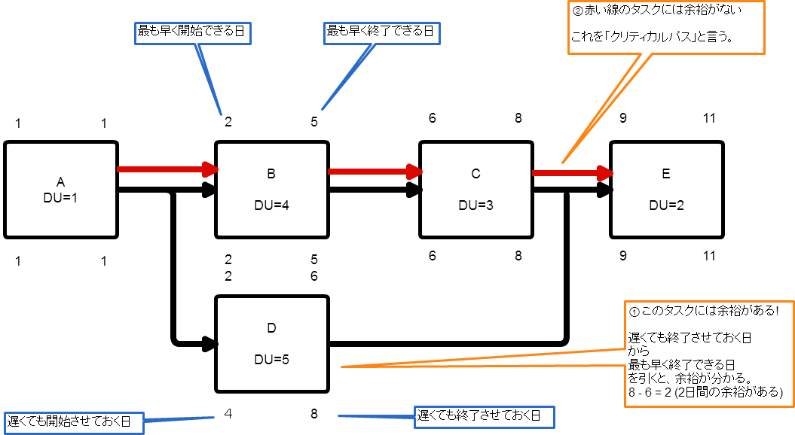
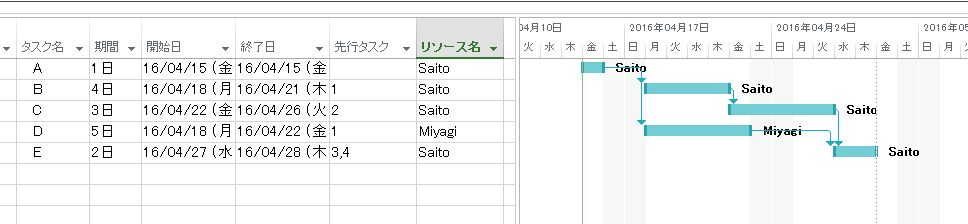

WBS
プロジェクト等で必要なタスクを構造図で描いたものをWBSという。 まず大日程を決めて、徐々に中日程・小日程にブレイクダウンしていく。 適切にWBSを作成することで、スケジュールやコストが明らかになる。
WBSの例
| タスク(Task) | 期間(Duration) | 先行タスク(Dependency) | リソース(Resource) |
| A | 1 | Saito | |
| B | 4 | A | Saito |
| C | 3 | B | Saito |
| D | 5 | A | Miyagi |
| E | 2 | C,D | Saito |
- タスク(Task)
- 期間(Duration)
- 先行タスク(Dependency)
- リソース(Resource)
- スケジュール(Schedule) : 下図「WBS to Gantt chart」のようにWBSをGantt chartに展開すると分かる
- コスト(Cost) : リソース×期間
- タスクの余裕(Float Buffer) : 下図「WBS to PDM」のようにWBSをPDMに展開すると分かる
- クリティカルパス(Ctical Path) : 下図「WBS to PDM」のようにWBSをPDMに展開すると分かる

WBS to Gantt chart

WBS Application
- Microsft Project(デスクトップアプリケーションでは最もちゃんとしている。)
- ProjectLibre(OSS)
- その他、RedmineなどWebアプリケーションを含めいろいろある